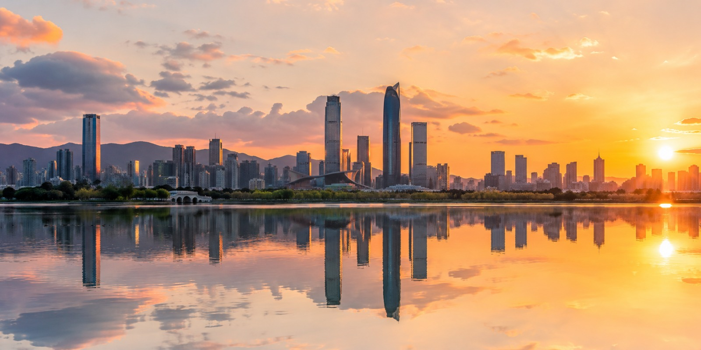

Kunming - La ciudad de la eterna primavera

Capital de Yunnan, con clima templado todo el ano. Puerta de entrada a la provincia.
- Aeropuerto: Kunming Changshui (KMG)
- Duracion promedio: 3-4 dias
- Mejor epoca: Todo el ano
Tu aerolinea low-cost en Yunnan
Volamos a los lugares mas hermosos de Yunnan y las principales ciudades de China.

Capital de Yunnan, con clima templado todo el ano. Puerta de entrada a la provincia.
Ciudad a orillas del lago Erhai, con arquitectura tradicional Bai y montanas Cang.
Region tropical al sur, con selvas, templos budistas y cultura de la etnia Dai.
Casco antiguo declarado Patrimonio de la Humanidad, con canales y arquitectura Naxi.
Meseta tibetana con monasterios, lagos alpinos y cultura budista.
Volamos a las principales ciudades de China con 87 vuelos semanales fuera de Yunnan.
| Ciudad | Codigo | Frecuencia semanal | Desde (CNY) |
|---|---|---|---|
| Beijing | PEK | 14 vuelos | 780 |
| Shanghai | SHA | 10 vuelos | 850 |
| Guangzhou | CAN | 12 vuelos | 620 |
| Chengdu | CTU | 21 vuelos | 380 |
| Xi'an | XIY | 7 vuelos | 690 |